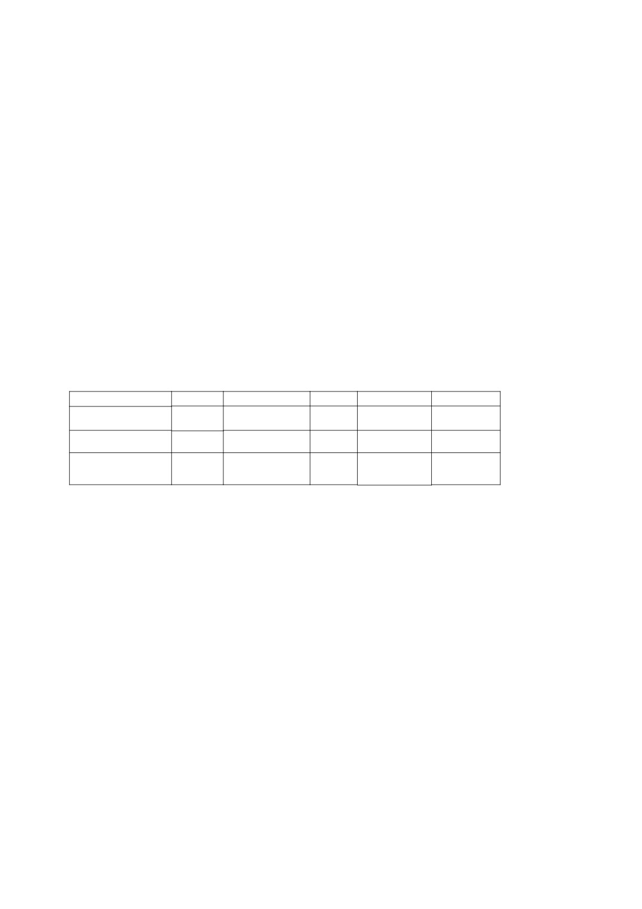

21/11/2017
Les SIC à l’épreuve du digital et des Humanités : des origines, des concepts, des méthodes et des outils
8 | 2016 :
Dossier
Les SIC à l’épreuve du digital et des Humanités : des
origines, des concepts, des méthodes et des outils
FRANCK CORMERAIS, OLIVIER LE DEUFF, AMAR LAKEL ET DAVID PUCHEU
Résumés
Français English
Ce texte examine plusieurs pistes qui expliquent le positionnement des SIC par rapport aux humanités digitales en considérant que leur rôle est à la fois de
comprendre (approche théorique) et d’entreprendre (approche pratique), d’observer (approche descriptive), mais aussi de créer (approche pragmatique) avec les
instruments de la connaissance. Le temps des humanités digitales implique une position qui ne peut se limiter à l’étude des usages mais nécessite une stratégie
renouvelée qui consiste à s’emparer et à produire des recommandations pour la création de nouveaux instruments et dispositifs. Nous présentons une proposition
d’orientation voire un programme pour les SIC en trois parties : replacer les SIC dans la perspective pluridisciplinaire de ses origines ; mettre les SIC et ses concepts
dans l’orbite d’une nouvelle critique et dans un environnement de données ; dynamiser les SIC par l’engagement d’une R&D outillant les SHS par le tournant
numérique.
This paper examines several tracks that explain the positioning of the french disciplinary field of information science and communication studies in connection
with the digital humanities. We show that its role is both to understand (theoretical approach) and undertake (practical approach), observe (descriptive approach)
but also created (pragmatic) with instruments of knowledge. The time of digital humanities implies a position that cannot be limited to the study of uses but
requires a renewed strategy to produce recommendations for the creation of new instruments and devices. We present a proposal or a policy program for
information science and communication studies into three parts: replace information science and communication studies in the multidisciplinary perspective of its
root ; put its ideas into the orbit of a new critical and Data Environment ; energise the commitment of R&D equipping the humanities for the digital turn.
Entrées d’index
Texte intégral
Introduction
Les sciences de l’information et de la communication (SIC) sont une discipline scientifique récente. Leur épistémologie les place de façon
1
adéquate pour appréhender le mouvement des humanités digitales et les enjeux autour des mutations du savoir et des lieux de transmission. La
position qu’elles occupent à la croisée des disciplines leur a valu régulièrement des critiques voire a suscité des divisions internes du fait d’une
vision française majoritaire qui envisage une alliance entre les sciences de l’information et les sciences de la communication. Nos collègues anglo-
saxons, à l’inverse, ont préféré séparer ces sciences en deux entités distinctes. Cependant, le choix français présente davantage de sens dans le
contexte du « tournant digital »1 qui requiert de traiter les aspects informationnels et communicationnels de concert. Le chercheur en SIC,
intéressé par les études digitales en général et les humanités digitales en particulier, ne peut ignorer les filiations originelles des fondateurs de la
discipline, reconnue en 1975. S’inscrire à la fois dans les apports de Robert Escarpit et de Jean Meyriat permet en effet de mieux comprendre que
les recherches actuelles sur les humanités digitales ne sont pas aussi nouvelles qu’on pourrait le croire. À l’inverse, les positions de rejet du digital
dans les sciences humaines et sociales (SHS) montrent l’existence2 d’une relation difficile à penser avec les techniques.
Ce texte examinera plusieurs pistes qui expliquent le positionnement des SIC par rapport aux humanités digitales en considérant que leur rôle
2
est à la fois de comprendre (approche théorique) et d’entreprendre (approche pratique), d’observer (approche descriptive), mais aussi de créer
(approche pragmatique) avec les instruments de la connaissance. Le temps des humanités digitales, pour cette raison, implique une position qui ne
peut se limiter à l’étude des usages mais nécessite une stratégie renouvelée qui consiste à s’emparer et à produire des recommandations pour la
création de nouveaux instruments et dispositifs de recherche. C’est donc dans un état de majorité (Simondon, 1989) vis-à-vis de la technique que se
retrouvent les SIC afin de répondre aux imaginaires d’une innovation permanente (Gras et Musso, 2013). Elles permettent de proposer une
troisième voie entre nostalgiques d’une université traditionnelle et prophètes des « révolutions à répétition » du web. À l’heure où les humanités
digitales produisent des mutations dans les manières de faire de la recherche, dans les façons d’enseigner, mais aussi dans les formes
organisationnelles des milieux de savoir (Liu, 2013), l’heure est peut-être venue de formuler les axes programmatiques de notre démarche.
Notre réflexion sur la position des SIC s’appuie sur de nombreux projets qui viennent enrichir les humanités digitales, en France et à l’étranger,
3
et participent au développement de notre discipline. Nous présentons ici une proposition d’orientation pour les SIC. Cette proposition se présente
en trois parties : replacer les SIC dans la perspective pluridisciplinaire de ses origines ; mettre les SIC et ses concepts dans l’orbite d’une nouvelle
critique et dans un environnement de données ; dynamiser les SIC par l’engagement d’une R&D outillant les SHS par le tournant numérique.
Les SIC entre plurisdiciplinarité et transdisciplinarité
Les SIC ont pu correspondre avant l’heure à une forme d’humanités digitales tant le cadre initial de leur formation était fortement inscrit dans
4
une approche pluridisciplinaire revendiquée par Robert Escarpit (Laulan, 2007), on y abordait les lettres, les arts, la culture et les techniques. La
nécessité d’une légitimité disciplinaire des SIC a fait parfois oublier ce terreau fertile dont on perçoit encore les traces dans le foisonnement de
compétences qui se côtoient dans les laboratoires en SIC. Sans tenter de vouloir réécrire ici l’histoire des SIC, il faut rappeler que pour Escarpit,
« Nous étions tous conscients qu’il y avait un trou dans la recherche française. Un trou ou des trous qui n’étaient pas comblés parce qu’il y avait
toujours ce vieux préjugé Sciences/Littérature ».3 C’est cette situation qu’Escarpit tente de combler en créant les IUT en 1967 pour les disciplines
dites « littéraires », peu habituées à considérer la question technique et professionnelle. Cet écart est en fait un espace qui permet d’étudier des
objets et des médias qui prennent alors une place importante dans la société des années soixante. Les SIC ne sont pas les seules bien évidemment à
s’interroger sur ces questions.
1/5

21/11/2017
Les SIC à l’épreuve du digital et des Humanités : des origines, des concepts, des méthodes et des outils
5
La question de la structuration du sens par les dispositifs et appareils d’écriture et de lecture, de l’économie de la communication, du processus
de subjectivation, mais également les questions du classement, de l’archivage et de l’archéologie des connaissances au cœur des mutations
organisationnelles : voilà autant de thèmes qui préoccupent les humanités digitales actuellement et les SIC depuis longtemps. Ce n’est pas
seulement le sens à travers la sémiologie et la sémiotique qui préoccupe les SIC, mais également la question du document avec la documentologie
de Paul Otlet (Otlet, 1934), concept qu’ont également soulevé Meyriat (Meyriat, 1981) et Escarpit (Escarpit, 1976). Quelques décennies plus tard,
cette interrogation se manifeste dans le collectif de Roger Pédauque autour du document numérique (Pédauque, 2007). Des travaux de recherche
soulignent le rôle central du document, des supports et des archives dans l’appréhension de la complexité organisationnelle. Nous songeons
notamment aux recherches sur l’indexation et la catégorisation menées dans le cadre de la science de l’information (Le Coadic, 2004) dans sa
relation étroite avec les outils et les mesures, telles qu’ont pu les envisager Paul Otlet avec la bibliométrie (1934). Puis, quelques décennies plus
tard, Vasily Nalimov dans le projet scientométrique d’une science de la science que l’on retrouve dans une série de travaux en SIC autour de la
fouille de textes (Ibekwe-San Juan, 2007) et des différentes métries (Lafouge et al., 2002).
En ce sens, Jean-Max Noyer pointait l’intérêt des métries (Noyer, 1995) pour observer les flux, mais aussi les réseaux d’agents humains et non
6
humains. Les SIC ont donc pressenti très tôt l’intérêt d’une approche mêlant filiations diverses et réconciliant différentes traditions pour fabriquer
des perspectives conjointes au domaine du rationnel dans sa calculabilité et au raisonnable dans sa compréhension critique du monde. Cette
hybridation nous conduit à privilégier la traduction du mot anglais Digital par digital plutôt que par numérique, tant il s’agit de prendre en compte
les possibilités de calcul et d’accès au document, les dimensions socioculturelles des outils et des interfaces, pour ne pas négliger la relation
historicisée entre le corps et l’esprit (Le Deuff, 2015). Les dispositifs et les appareils techniques sont également étudiés comme partie prenante d’un
écosystème de normes et de formes (Le Moenne, 2013) qui interrogent les questions de pouvoir en jeu dans les architextes (Jeanneret, Souchier,
1999) implémentés des logiciels.
Quand on aborde la dimension organisationnelle des écosystèmes, l’étude des médias (media studies) permet d’élargir l’horizon des humanités
7
digitales à la communication de masse. Presse, radio, télévision, publicité, mais également toutes les formes issues du web vont susciter des travaux
de recherche. Cette historicité des études médiatiques fait écho à un courant qui replace les médias dans une histoire : l’archéologie des médias4.
Alors que souvent les discours cherchent à produire une rupture par le renouvellement des objets sous un vocable révolutionnaire qui vise à casser
les filiations, les SIC à l’inverse autorisent des arrêts et des retours pour mieux appréhender les forces en action. Les SIC s’inscrivent pleinement
dans une archéologie des médiations. L’étude des individuations personnelles et organisationnelles dans le contexte contemporain relie de façon
indissociable la question techno-scientifique des problématiques de l’humanisme (Hayles, 2012).
Les SIC et la nouvelle critique à l’âge des technosciences
Les SIC interrogent avec les humanités digitales les concepts et le statut contemporain de l’humanisme et son épistémè. Nous ne souhaitons ni
8
adopter les thèses posthumanistes qui annoncent un devenir cyborg de l’espèce (Besnier, 2013) ni nous contenter d’un humanisme conservateur et
gardien des traditions. Nous entendons plutôt placer les SIC dans la lignée d’une culture digitale qui suppose une nouvelle critique, c’est-à-dire un
processus de réflexivité distanciatrice situé au cœur des processus digitaux. Cette critique interroge l’héritage de la modernité par une co-
interprétation de l’évolution de la société ; ceci dans un soutien à la transformation des rapports à l’archive, aux corpus, à la culture (Carayol et
Morandi, 2015).
9
La première opération de cette généalogie consiste à relier différents types de savoir dans la recherche d’un accord qui s’interroge sur la
conditionnalité du sens, véritable marque d’une évolution du travail interprétatif (Cormerais, 2015). Au-delà du grand partage des sciences dites
« dures » et « molles », il convient de mieux cerner de nouvelles opérations du savoir contemporain (cf. tableau 1).
Tableau n° 1 - Les SIC et la mutation de l’épistémè
Étude
Transmission
Valeur
Critique
Appareil
expérimenter/
neutralité
idéal d’une science
sciences de la nature
loi de la nature
critique du dogmatisme
vérifier
axiologique
sans appareil
régime
société sans
sciences humaines
décrire/critiquer
expérience du monde
critique sociale
d’engagement
appareillage
critique
sciences de l’information et de la
modes d’existence (humain et
Praticabilité du
science et société
modéliser/simuler
interdisciplinaire et
communication
machinique)
savoir
appareillées
transdisciplinaire
Le tableau met en relief des mutations dans cinq sphères pour rendre compte des « révolutions scientifiques » (Parrochia, 1997). Dans chaque
10
sphère se livre, par comparaison, la compréhension du tournant digital qui inscrit les plis du renouvellement de la connaissance contemporaine.
Tentons d’éclairer, de manière heuristique, les enjeux d’une telle transformation dans chacune des sphères mobilisées.
Les conditions dans lesquelles s’organisent les études digitales modifient la conception même du travail intellectuel (Cormerais et Le Deuff,
11
2014). Les grandes démarches du développement de l’intelligence reposent sur un changement de paradigme et de méthode. Comme les sciences
expérimentales ont bouleversé les conceptions de la nature et du cosmos, les sciences humaines se sont intéressées au langage, à la biologie et à
l’économie pour changer le statut de la connaissance par l’établissement de rapports entre les sciences et leur discours (Foucault, 1966).
Aujourd’hui, les SIC font dialoguer les sciences du signe, du signal et du calcul (Galinon-Mélénec et al., 2015). Les conditions du transmettre sont
également modifiées. Ce n’est plus tant la découverte des lois d’une nature éternelle que la fabrication d’une nouvelle nature qui devient l’enjeu
d’une artificialité. La transformation expérientielle du monde se livre alors dans l’articulation des modes d’existence des objets et des collectifs
humains. La reconnaissance d’un milieu technique favorise l’attention portée aux choix techno-scientifiques qui engagent le futur dès à présent
(Cormerais, 2015b).
Les conditions de la valorisation se modifient aussi. C’est autour de la praticabilité du savoir que se jouent les grandes orientations des
12
programmes de recherche. Il ne s’agit pas tant de confondre la recherche fondamentale et la recherche appliquée, mais de souligner les
implications négatives d’une séparation imperméable entre deux registres.
Les conditions d’une nouvelle critique rendent possible l’établissement de nouveaux critères pour la décision. C’est du dialogue dans les
13
disciplines et entre les disciplines que peut surgir une façon d’aborder des problématiques et leurs critériologies. L’importance des données
obtenues à condition d’en établir la validité (Kitchin, 2014), en passant à travers le filtre des disciplines, peut venir éclairer et proposer des
orientations originales. Le dépassement du clivage entre posture négative et positive rend envisageable un autre régime de la performativité du
savoir qui assure un statut épistémologique au « trans » (Cormerais, 2015) et à « l’inter » à travers un dialogue des disciplines que les SIC peuvent
favoriser.
Les conditions de l’appareillage transforment l’appréhension du réel. Cette situation n’est pas nouvelle, seulement la prise de conscience de leur
14
importance revient sur le statut mineur des instruments du savoir. Les SIC aujourd’hui reconnaissent l’importance des technologies tout en évitant
l’écueil du déterminisme technique matrice du techno-utopisme. La position des SIC présentée dans le tableau se conçoit dans un dialogue entre
formalisme et critique. Cela suppose un nouvel esprit scientifique : dépasser les oppositions binaires ; abaisser les frontières et ouvrir les portes du
monde académique entre disciplines ; mais aussi, à l’extérieur, collaborer avec des acteurs aujourd’hui trop loin des humanités. Cet esprit
scientifique s’organise à l’aide des données dans une transdisciplinarité, où le partage de problèmes communs, au prisme de constructions et de
méthodes hétérogènes, pourrait faire évoluer les questions et les solutions novatrices. Il ne s’agit pas de proclamer la fin des disciplines (illusion du
postdisciplinaire), mais au contraire de promouvoir des méthodes ou approches interprétatives nouvelles, qualitatives et quantitatives (Stiegler
et al., 2014). Le digital autorise par la puissance calculatoire une mise en commun des connaissances autour des corpus hétérogènes et complexes.
Les masses de données échappent à tout « principe de raison » sans une nouvelle science de l’interprétation qui serait aussi une critique des data
scientists et de leur affirmation de la suffisance des algorithmes (Cardon, 2015).
Dans ce contexte, la reconfiguration des savoirs rencontre la crise d’un système académique qui a peu évolué dans sa structure depuis le modèle
15
allemand de Von Humboldt au début du XIXe siècle. Deux siècles plus tard, la mathématisation est une modalité d’un monde qui se complexifie
dans ses structures se virtualisant (Berry, 2012). Ainsi s’impose un nouveau modèle de la recherche, modèle qui ne reste pas dans l’illusion d’un
savoir désincarné, désintéressé et indépendant de la société. La confrontation contemporaine des limites de la nature, de la finitude des
organisations humaines et des nouveaux horizons du calcul informatisé incarne, au contraire, une certaine instabilité des savoirs, c’est-à-dire la fin
d’une progression linéaire de la connaissance. La complexité rend indispensable l’association des connaissances vernaculaires, des méthodologies
critiques et des langages formels, des mémoires du passé et des sauts prospectifs. En fait, il s’agit de s’interroger pleinement sur la posture
d’enseignant chercheur : d’affirmer une position forte de la critique dans une société digitalisée, où les technosciences s’imposent comme une
évidence, souvent sans débat.
2/5
21/11/2017
Les SIC à l’épreuve du digital et des Humanités : des origines, des concepts, des méthodes et des outils
Les SIC à l’épreuve des études digitales : l’appareillage et les cartes
du savoir
C’est dans le contexte d’une culture, ouverte (de type open source), que les projets de recherche dans les SIC qualifiés d’humanités digitales
16
forment un creuset. Une taxonomie est d’ailleurs développée actuellement pour répertorier les différentes activités de recherche réalisées lors de
projets (Tadirah5). L’immense production de signes numériques couplée à un archivage automatique est une opportunité pour les chercheurs en
SIC qui souhaitent étudier la pluralité des formats de l’éditorialisation sur Internet6. Sites web, blogs, magazines en ligne, réseaux sociaux,
accompagnent l’accessibilité des outils de publication, sans toujours proposer une grande précision méthodologique. L’espace médiatique qui sous-
tendait l’espace public (et les études média) repose sur des formes renouvelées par les réseaux (Stenger et Coutant, 2011). Ceci pose un problème de
représentation de la société quand un grand nombre d’internautes s’exprime sur le web en produisant une archive complexe à localiser, à analyser,
à conserver et à interpréter. Le recueil et la constitution des données deviennent ainsi une des priorités pour les chercheurs.
Le défi des données passe d’abord par l’élaboration d’appareils ou plateformes variées. Les méthodologies qu’elles embarquent doivent être
17
sujettes à la disputatio et à la critique7. Ces dispositifs, qui sont en charge de gérer des masses importantes de données, s’appuient sur une logique
de crowdsourcing. En relation avec l’industrialisation de la production et de la lecture de masse des données, il convient de s’intéresser aux
capacités de traitement contributif au sein d’équipes nationales et internationales. Les grands projets de la recherche exigent des protocoles.
Distinguons deux orientations nettes actuellement à l’œuvre :
Une épistémologie de la donnée pour assurer la rigueur des études
digitales
Le triptyque document-support-archive met les chercheurs en SIC en position de renouveler les techniques de l’enquête traditionnelle ou
18
l’observation directe :
Comment être capable d’explorer d’immenses quantités de données en un temps rapide à travers une pluralité de format et d’expression
hétérogènes ?
Comment concevoir des modalités d’extraction paramétrables et transparentes à travers des agents intelligents de type crawler, afin de
constituer des échantillons de discours représentatifs de populations difficilement repérables ?
Véritable renouveau de l’enquête, le traitement des données (nettoyage, recodage, encodage et annotation) implique une réflexion sur les normes
19
documentaires. Une connaissance plus précise des données, dans une perspective herméneutique (Rastier, 2011), permet d’embarquer les agents
algorithmiques sur la voie de la lecture automatique des corpus, de l’analyse automatique du discours. Ceci afin de contextualiser le sens, d’en
comprendre l’économie de production et le contexte d’émergence.
Une analyse multivariée des corpus
L’étude des corpus ouvre plusieurs champs à la cartographie de données (Plantin, 2014) issues du web avec des instruments de crawl comme le
20
navicrawler (devenu aujourd’hui Hyphe) développé au medialab de l’IEP Paris8 à l’initiative de Franck Ghitalla. L’ensemble de la qualification des
données dégage des modèles de corpus statistiques qui renouvellent les notions d’auteur et d’éditorialisation. L’attribution et l’identification restent
l’enjeu majeur de l’analyse communicationelle sur internet (Lakel, 2007). A partir de set de données reliées, l’analyse multivariée et la méthode des
profils, le traitement des corpus « similaires », la sociotypie de la pragmatique discursive s’appuyant sur des discours vivants (en opposition à
l’enquête représentative), permettent des analyses de l’économie discursive sur Internet. Ainsi peuvent se mesurer les positions sociales
stratégiques des acteurs.
La notion de « relation » peut être explorée de multiples façons dans la mise en rapport d’éléments de corpus via les théories des graphes pour
21
tenter de mesurer les effets de viralité. Couplée à l’exploration visuelle des grandes masses de données, l’analyse relationnelle produit des effets
dont il faut remarquer la portée scientifique avec prudence et intérêt, mais nous aurions tort de rejeter l’utilité heuristique d’une lecture dite « à
distance » (Moretti, 2013). Ce sont encore les appareils de la recherche qui relancent la question de la sémiologie de données. Le concept avait été
consacré par la graphique en opposition au graphisme (Bertin, 2013). Depuis 10 ans un engouement pour la data et sa mise en forme a permis un
flot d’innovations techniques. La visualisation de données est un passage dans la gestion et l’interprétation des grandes masses de données
(Drucker, 2011). Au-delà de la dimension nécessaire, l’exploration graphique des corpus depuis le premier tri à plat a toujours été l’élément
essentiel de l’analyse et de l’interprétation des objets de recherche. Il faut développer, en marge de l’innovation permise par les outils, de nouveaux
modèles qui puissent faire sens au-delà d’un simple enthousiasme esthétique. En effet, les outils de cartographie comme Gephi requièrent le
développement d’une logique interprétative qui ne se contente pas d’une visualisation figée qui serait explicite d’elle-même.
Situé au point de convergence de ces deux orientations, le projet My Web Intelligence9, proposé par Amar Lakel, est un exemple d’une recherche-
22
action en cours dans le cadre des SIC ; il dote la communauté des chercheurs, mais aussi de professionnels du numérique, d’une plateforme open-
source ouverte à l’intégration des méthodes d’analyse des corpus numériques. Avec cette application développée à l’université Bordeaux-
Montaigne, la recherche sur la production de contenu en ligne peut mieux gérer les phases préliminaires du traitement des données et des
hypothèses dans une étude. Elle ouvre surtout la perspective d’un ensemble d’application partagé par la discipline.
Conclusion : les SIC, une démarche pour une connaissance mieux
partagée
Les SIC ont travaillé ces dernières années autour des usages (Jauréguiberry et Proulx, 2011). Cette position d’observation doit être complétée tant
23
il s’agit de comprendre les textes et les choses, les hommes et les réseaux, à l’aide de l’analyse des datas comme archive vivante. Une archéologie des
savoirs en SIC liées aux humanités digitales et plus généralement aux études digitales constitue un beau défi, notamment afin de rappeler que dans
ses fondements il s’agissait de se saisir des espaces oubliés ou jugés non légitimes. Désormais, il est question de compléter cette démarche en
l’articulant à une logique projet qui mêle une pluralité d’approches et de méthodologies pour construire des outils et un appareillage critique qui
réalise par des concepts de nouvelles modélisations, de nouvelles façons d’écrire la science et de décrire le monde. L’enjeu est donc d’élaborer de
nouvelles littératies parmi les chercheurs, étudiants et futurs chercheurs (Le Deuff, 2012) ; il faut se rappeler que le contexte d’émergence des SIC
était également lié à un besoin de formation (Miège, 2000). Le mouvement des médialabs puis des métalabs offre des perspectives pour
expérimenter et se former. Au-delà d’un signe des temps, s’organise là une façon de faire qui met en jeu la nouvelle praticabilité du savoir.
Bibliographie
AKRICH Madeleine et al., Sociologie de la traduction textes fondateurs, Paris, Presses de l’École des Mines, 2006.
BERRY David, Understanding Digital Humanities, Palgrave Macmillan, 2012.
BERTIN Jacques. Sémiologie graphique : Les diagrammes, les réseaux, les cartes, Paris, Éditions de l’École des Hautes Études en Sciences Sociales, 2013
BESNIER Jean-Michel, Demain les posthumains : Le futur atil encore besoin de nous ?, Paris, Fayard/Pluriel, 2012
BOLTANSKI Luc et THEVENOT Laurent, De la justification les économies de la grandeur, Paris, Gallimard, 1991
BOLTANSKI Luc et CHIAPPELO Eve, Le nouvel esprit du capitalisme, Paris, Gallimard, 1999
CALLON Michel et al., Agir dans un monde incertain essai sur la démocratie technique, Paris, Éditions du Seuil, 2001
CARDON Dominique, A quoi rêvent les algorithmes : Nos vies à l’heure des big data, Paris, Seuil, 2015
CORMERAIS Franck, « Humanités digitales, transdisciplinarité et entretrextualité. Éléments pour une organisation des corpus partagés », in CARAYOL Valérie et
MORANDI Franck (sous la dir. de), Le tournant numérique des sciences humaines et sociales, Bordeaux, Maison des sciences d’Aquitaine, 2015, p. 55-65.
CORMERAIS Franck, « Humanités digitales et Ré/orgnanisation du savoir », in LE DEUFF Olivier (sous la dir. de), Le temps des Humanités digitales, Limoges, fyp
éditions, 2015a
CORMERAIS Franck, « Hyperville, éléments pour un design contributif et digital », in SEVERO Martha et ROMELE Alberto, Traces numériques et territoire, Presses des
Mines, Paris, 2015b, p. 163-177
3/5
21/11/2017
Les SIC à l’épreuve du digital et des Humanités : des origines, des concepts, des méthodes et des outils
CORMERAIS Franck, « De la critique de l’économie politique du signe à l’économie politique de la trace numérique, Exploitation des données et technologie
politique », in GALINON-MELENEC Béatrice, LIENARDT Fabien et ZLITNI Sami (sous la dir. de). L’Hommetrace Inscriptions corporelles et techniques, Paris, CNRS
éditions, 2015c
CORMERAIS Franck, LE DEUFF, Olivier, « Le lettré du numérique dans la reconfiguration du savoir contemporain », Colloque Digital Intelligence, Nantes, septembre
DRUCKER Johanna, “Humanities approaches to graphical display” Digital humanities Quaterly, vol. 5, n° 1, 2001
ESCARPIT Robert, Théorie générale de l’information et de la communication, Paris, Hachette, 1976
FOUCAULT Michel, Les mots et les choses ; une archéologie des sciences humaines, Paris, Gallimard, 1966
FOUCAULT Michel, Archéologie du savoir, Collection Tel, Paris, Gallimard, 2008
GALINON-MELENEC Béatrice, LIENARDT Fabien et ZLITNI Samo (sous la dir. de) L’Hommetrace. Inscriptions corporelles et techniques, Paris, CNRS éditions, 2015
GRAS Alain et MUSSO Pierre. Les imaginaires de l’innovation technique : Regard anthropologique sur le passé dans la perspective d’un avenir incertain. Paris :
Éditions Manucius, 2013.
HAYLES Katherine, How We Think : Digital Media and Contemporary Technogenesis. University of Chicago Press, 2012
JAUREGUIBERRY Francis et PROULX Serge, Usages et enjeux des technologies de communication, Toulouse, Érès, 2011
IBEKWE-SANJUAN Fidélia. (2007), Fouille de textes : méthodes, outils et applications, Hermès-Lavoisier, Paris-London, (Collection « Systèmes d’information et
organisations documentaires), 2007
JEANNERET Yves et SOUCHIER Emmanuel « Pour une poétique des écrits d’écran », Xoana, n° 6, 1999, p. 97-107.
KITCHIN Rob, The Data Revolution. Big Data, Open Data, Data Infrastructures and Their Consequences, Londres, Sage, 2014
LAFOUGE Thierry, LE COADIC Yves-François et MICHEL Christine, Éléments de statistique et de mathématique de l’information : infométrie, bibliométrie, médiamétrie,
scientométrie, muséométrie, webométrie : cours avec exemples et exercices corrigés, Presses de l’ENSSIB, 2002
LAKEL Amar, « Interconnexion et identités électroniques : vers un système de fichiers répartis » in Terminal n° 99-100, dossier spécial Administration électronique :
où en sommesnous ?, 2007.
LAULAN Anne-Marie, « Autour de Robert Escarpit : l’effervescence bordelaise (1960-1972). », Hermès, La Revue 2/2007 (n° 48), p. 95-100. Disponible à l’adresse
LE COADIC Yves-François, La science de l’information (3e édition), Paris, Presses Universitaires de France, PUF, 2004.
LE DEUFF Olivier, Les humanités digitales précèdent-elles le numérique ? Jalons pour une histoire longue des humanités digitales in SALEH, I. et al. (dir.).
H2PTM’15, ISTE Éditions, 2015, p. 421-432
LE DEUFF Olivier, Humanisme numérique et littératies, Semen n° 34, 2012, p. 117-134
LE DEUFF Olivier et CLAVERT Frédéric, « Petite histoire des humanités digitales » in LE DEUFF Olivier (sous la dir. de), Le temps des humanités digitales, Fyp
éditions, 2014 p. 15-31
LE MOËNNE Christian, « Entre formes et normes. Un champ de recherches fécond pour les SIC ». Revue française des sciences de l’information et de la
LIU Alan, “The Meaning of Digital Humanities”. Publications of the Modern Language Association, 128.2, 2013, p. 409-423
MEYRIAT Jean, « Document, documentation, documentologie ». Schéma et schématisation, 2e trimestre, no 14, 1981, p. 51-63
MIEGE Bernard, « Les apports à la recherche des sciences de l’information et de la communication ». Réseaux, 18(100), 2000, p. 547-568. Disponible sur :
MORETTI Franco, Distant Reading. Verso Books, 2013
NOYER Jean-Max,
« Scientométrie, infométrie
:
pourquoi nous intéressent-elles
?
» Solaris n°
2,1995 disponible sur
:
OTLET Paul, Traité de documentation : le livre sur le livre : Théorie et pratique, Bruxelles, éditions Mundaneum, 1934
PARIKKA Jussi, What is Media Archaeology ? (1 st ed.), Cambridge, Polity Press, 2012.
PARROCHIA Daniel, Les grandes révolutions scientifiques du XXe siècle, PUF, 1997
PLANTIN Jean-Christophe, La cartographie numérique, (Collection Systèmes d’information, Web et Informatique ubiquitaire), London, ISTE, 2014
PEDAUQUE Roger. La Redocumentarisation Du Monde, Toulouse, Cépaduès-Editions, 2007.
RASTIER François, La mesure et le grain. Sémantique de corpus, Paris, Champion, Collection Lettres numériques, 2011
SIMONDON Gilbert, Du mode d’existence des objets techniques, Paris, Aubier, 1989
STIEGLER Bernard (sous la dir. de). Digital studies : Organologie des savoirs et technologies de la connaissance, Limoges, fyp éditions, 2014.
STENGER Thomas et COUTANT Alexandre (sous la dir. de). Hermès, N° 59 : Ces réseaux numériques dits sociaux, Paris, CNRS, 2011.
Notes
Bordeaux, nous avons voulu développer, au cœur d’un programme transversal sur les humanités digitales du laboratoire MICA, soutenu par l’Université Bordeaux
Montaigne, l’Institut des Humanités digitales de Bordeaux (IHDB) pour fédérer les problématiques épistémologiques, méthodologiques et pratiques des chercheurs
qui travaillent dans le champ de l’éditorialisation (et de ses archives) numérique. Après une période de réflexion ouverte aux acteurs de la recherche en Aquitaine
(2010-2014), l’IHDB s’appuie aujourd’hui sur une stratégie de fédération des acteurs de la recherche autour de projets concrets. C’est dans cette logique de projet
orientée R&D que se pense aujourd’hui un travail de réflexivité des SIC aux défis de la communication numérique.
2 Collectif. A l’université, l’illusion numérique. Tribune du 14 juin 2015. Disponible sur : http://www.liberation.fr/societe/2015/06/14/a-l-universite-l-illusion-
4 Le chercheur finlandais, Jussi Parikka (Parikka, 2012°) définit l’archéologie des médias « comme une manière de réfléchir aux nouvelles cultures médiatiques en
profitant des intuitions tirées des nouveaux médias du passé, souvent en mettant l’accent sur les appareillages, les pratiques et les inventions oubliées, bizarres,
improbables ou surprenantes. […] L’archéologie des médias considère les cultures médiatiques comme sédimentées en différentes couches, selon des plis du temps
et de la matérialité au sein desquels le passé peut soudain être redécouvert d’une façon nouvelle, alors même que les nouvelles technologies deviennent obsolètes à
un rythme de plus en plus rapide.» Jussi Parikka, What Is Media Archaeology ?, Cambridge, Polity, 2012, p. 2-3. Traduction par Yves Citton dans l’article : Les
6 Le séminaire international sur l’éditorialisation existe depuis 2011 à l’initiative notamment de l’IRI : http://www.iri.centrepompidou.fr/evenement/nouvelles-
7 Nous songeons ici aux possibilités offertes pour partager et améliorer un logiciel, son code et ses fonctionnalités comme sur GitHub par exemple.
Pour citer cet article
Référence électronique
Franck Cormerais, Olivier Le Deuff, Amar Lakel et David Pucheu, « Les SIC à l’épreuve du digital et des Humanités : des origines, des concepts, des méthodes et
des outils », Revue française des sciences de l’information et de la communication [En ligne], 8 | 2016, mis en ligne le 23 mars 2016, consulté le 21 novembre
Auteurs
Professeur des Universités. Laboratoire MICA, EA 4426. Docteur en philosophie (Paris 1), Docteur en science de l’information et de la communication (Paris 13).
Responsable de l’axe prioritaire Humanités Digitales de l’Université BordeauxMontaigne. Ses recherches portent sur l’anthropologie des techniques et sur les
pratiques herméneutiques des TIC. Coresponsable d’un séminaire international sur les Humanités digitales à l’école Doctorale de l’Université Bordeaux
Montaigne. Responsabilités scientifiques récentes dans des projets : réseau européen des Digital Studies (depuis 2015), Musée virtuel de la pensée (2014).
Derniers ouvrages publiés : La société éclatée, le retour de l’objet local, éd. de L’Aube, 2014 ; Poétique du numérique 3, Éditions de l’Entretemps, 2015. Co
fondateur de la revue Études Digitales chez Classiques Garnier.
Articles du même auteur
4/5
21/11/2017
Les SIC à l’épreuve du digital et des Humanités : des origines, des concepts, des méthodes et des outils
Paru dans Revue française des sciences de l’information et de la communication, 10 | 2017
Olivier Le Deuff est maître de conférences en Sciences de l’information à l’Université Bordeaux Montaigne, responsable du DUT information numérique dans les
organisations. Ses recherches portent sur les humanités digitales, les cultures numériques, la formation à l’information, l’histoire de l’information et de la
documentation. Il a notamment dirigé l’ouvrage Le Temps des Humanités digitales chez Fyp éditions, et a publié La Documentation dans le numérique aux Presses
de l’Enssib.
Articles du même auteur
Paru dans Revue française des sciences de l’information et de la communication, 8 | 2016
Paru dans Revue française des sciences de l’information et de la communication, 5 | 2014
Amar Lakel est maître de conférences en Sciences de l’information à l’Université Bordeaux Montaigne. Ses recherches sur la mutation de l’espace public par la
communication numérique l’ont amené à développer une théorie de la gouvernance de la communication dans un système complexe et ouvert. Il développe depuis
5 ans une méthodologie d’étude des espaces numériques à travers l’invocation de l’analyse des graphes et des analyses multivariées afin de constituer un à objet
empirique observable. Il est responsable du projet My Web Intelligence.
David Pucheu est maître de conférences en Sciences de l’information et de la communication, ses travaux de recherches portent essentiellement sur les
imaginaires technologiques et leur rapport au processus d’innovation. Par ailleurs spécialiste du design de l’Interaction HommeMachine, il a investi ses
questionnements au service des usages éducatifs des TIC dans le cadre de l’EA TECHNE de l’Université de Poitiers avant de rejoindre l’équipe du MICA.
Droits d’auteur
Les contenus de la Revue française des sciences de l’information et de la communication sont mis à disposition selon les termes de la Licence Creative Commons
Attribution Pas d’Utilisation Commerciale Partage dans les Mêmes Conditions 4.0 International.
5/5